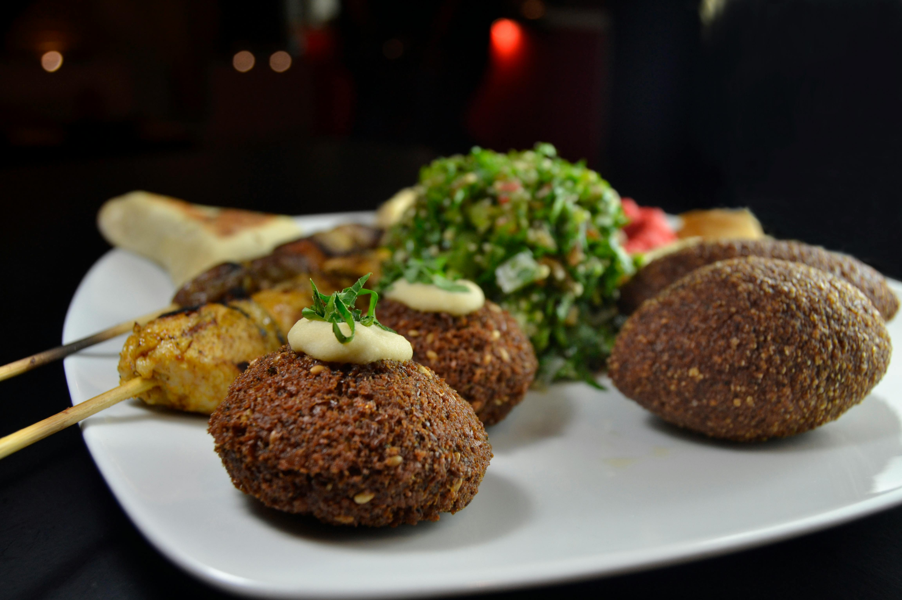

FALAFEL Recipes

home
DISH description:
FALAFEL is a deep-fried ball or patty-shaped fritter of Egyptian origin that features in Middle Eastern cuisine, particularly Levantine cuisines. It is made from ground fava beans, chickpeas, or both, and mixed with herbs and spices before frying.
Falafel is a popular street food eaten throughout the Middle East. In Egypt and the Arabian Peninsula, it is most often made with fava beans, while in the Levant, it is typically made with chickpeas or sometimes a blend of both
Ingredients :
- Dried chickpeas: 1 cup (225 g)
- Onion: ½ small (1/2 cup, 55 g) or or 1/2 medium (approx. 1/2 cup)
- Fresh cilantro: 1/4 to 1 cup (25–100 g)
- Fresh parsley: 1/4 to 1 cup (25–100 g)
- Fresh dill: 3/4 cup (55 g)
- Lemon juice: 1 to 2 tablespoons (15–30 ml)
- Lemon zest: 1 teaspoon (5 g)
Steps :
- To make falafel, start by soaking dried chickpeas overnight in water with baking soda to soften them
- After soaking, drain and rinse the chickpeas, then process them with chopped onions, garlic, fresh herbs like parsley and cilantro, and spices such as cumin, coriander, and salt until the mixture reaches a coarse, paste-like consistency.
- Transfer the mixture to a bowl, cover, and refrigerate for at least 1 hour to help it bind
- Just before cooking, mix in baking powder and sesame seeds if desired.
- Form the mixture into balls or patties using wet hands to prevent sticking
- ry the falafel in hot oil at 350–375°F until golden brown and crispy on both sides, or bake them at 400°F for 25–30 minutes, drizzling with oil for crispiness
- Serve hot with tahini sauce, hummus, and fresh vegetables in pita bread or as part of a mezze spread